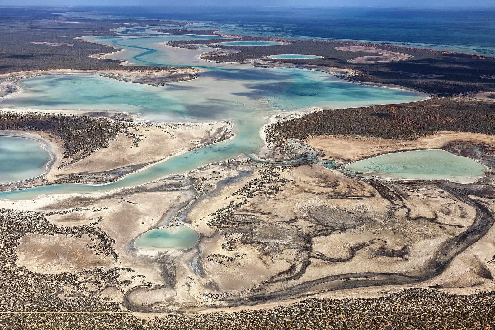
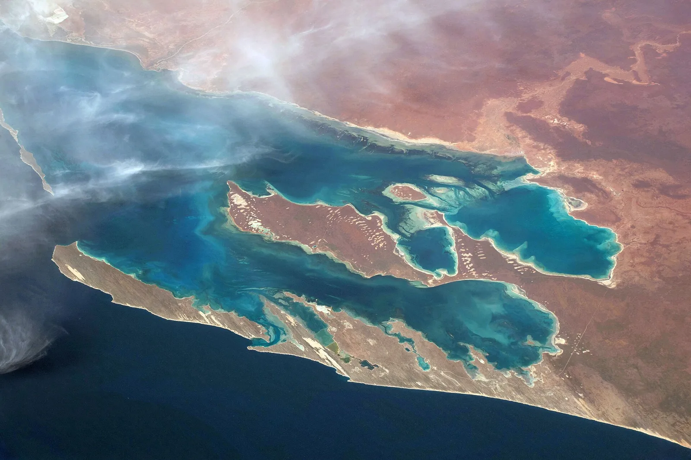

S13 · Sur
S13 · Süden
S13 · South
Shark Bay
En Shark Bay vi piedras vivas, construidas por seres diminutos que existen desde hace tres mil millones de años.
In der Shark Bay sah ich lebende Steine, gebaut von winzigen Wesen, die es seit drei Milliarden Jahren gibt.
In Shark Bay I saw living stones, built by tiny beings that have existed for three billion years.
Información
Shark Bay está en el punto más occidental del continente australiano. Sus aguas, islas y penínsulas cubren unos 2,2 millones de hectáreas, de las cuales cerca del 70 % son marinas.
Tiene las praderas de pastos marinos más extensas y diversas del mundo: 4.800 kilómetros cuadrados. De ellas vive su población de dugongos.
Pero lo que la hace única son los estromatolitos: colonias de tapetes microbianos que forman depósitos duros con forma de cúpula, y que están entre las formas de vida más antiguas que se conocen en la Tierra. En Shark Bay viven además cinco especies de mamíferos amenazados.
Information
Shark Bay está en el punto más occidental del continente australiano. Sus aguas, islas y penínsulas cubren unos 2,2 millones de hectáreas, de las cuales cerca del 70 % son marinas.
Tiene las praderas de pastos marinos más extensas y diversas del mundo: 4.800 kilómetros cuadrados. De ellas vive su población de dugongos.
Pero lo que la hace única son los estromatolitos: colonias de tapetes microbianos que forman depósitos duros con forma de cúpula, y que están entre las formas de vida más antiguas que se conocen en la Tierra. En Shark Bay viven además cinco especies de mamíferos amenazados.
Information
Shark Bay está en el punto más occidental del continente australiano. Sus aguas, islas y penínsulas cubren unos 2,2 millones de hectáreas, de las cuales cerca del 70 % son marinas.
Tiene las praderas de pastos marinos más extensas y diversas del mundo: 4.800 kilómetros cuadrados. De ellas vive su población de dugongos.
Pero lo que la hace única son los estromatolitos: colonias de tapetes microbianos que forman depósitos duros con forma de cúpula, y que están entre las formas de vida más antiguas que se conocen en la Tierra. En Shark Bay viven además cinco especies de mamíferos amenazados.
La UICN evalúa Shark Bay como de «preocupación significativa», por la escalada de amenazas ligadas al clima.
Los estromatolitos y microbialitos —los ejemplos vivos más antiguos de vida en la Tierra que guarda el sitio— están en buen estado y sin daños mayores, pero cada vez más amenazados: su crecimiento es vulnerable al ascenso del nivel del mar.
La UICN evalúa Shark Bay como de «preocupación significativa», por la escalada de amenazas ligadas al clima.
Los estromatolitos y microbialitos —los ejemplos vivos más antiguos de vida en la Tierra que guarda el sitio— están en buen estado y sin daños mayores, pero cada vez más amenazados: su crecimiento es vulnerable al ascenso del nivel del mar.
La UICN evalúa Shark Bay como de «preocupación significativa», por la escalada de amenazas ligadas al clima.
Los estromatolitos y microbialitos —los ejemplos vivos más antiguos de vida en la Tierra que guarda el sitio— están en buen estado y sin daños mayores, pero cada vez más amenazados: su crecimiento es vulnerable al ascenso del nivel del mar.
Fuentes
Quellen
Sources
- UICN, Perspectiva del Patrimonio Mundial (evaluación 2025), Shark Bay, Western Australia — https://worldheritageoutlook.iucn.org/explore-sites/shark-bay-western-australia
Galería
Galerie
Gallery


Fuentes
Quellen
Sources
- UNESCO, Centro del Patrimonio Mundial, Shark Bay, Western Australia — https://whc.unesco.org/en/list/578/ consultado 2026-10-05abgerufen 2026-10-05accessed 2026-10-05